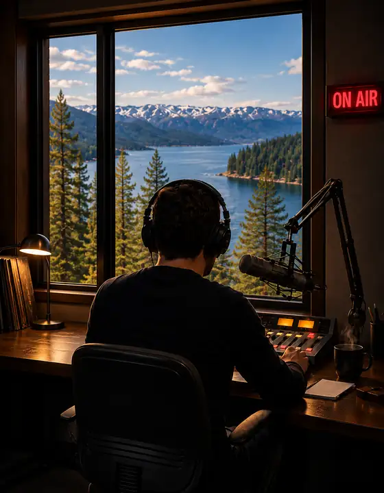

Weekdays · 6–9 AM & 9 PM–Midnight
Jake Ellis
The Breakfast Club / Whispers After Dark
Start the morning with Tahoe's familiar voice, then return after dark for music, conversation, and stories that take on a different meaning at night.
Meet Jake
Known as the Voice of the Lake, Jake prefers the microphone to the spotlight. His audience knows his sound; the man behind it remains something of a mystery.